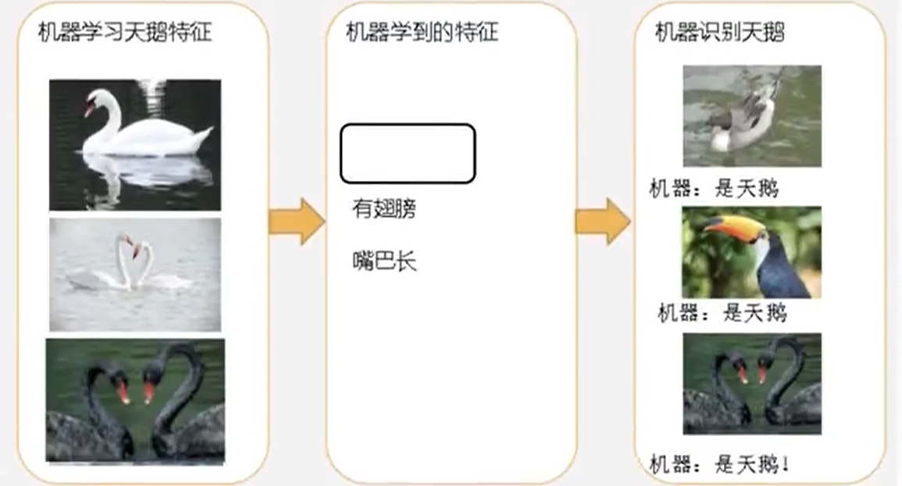
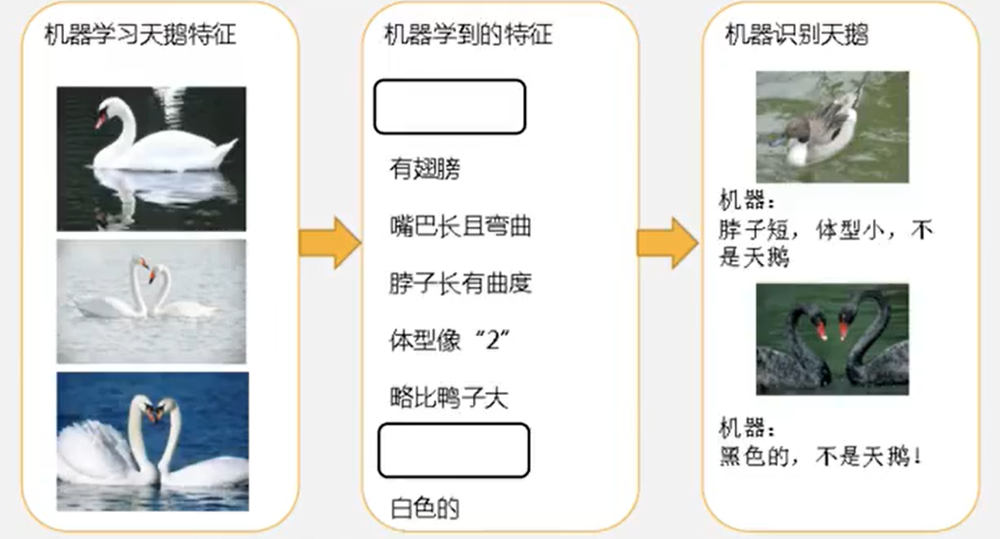
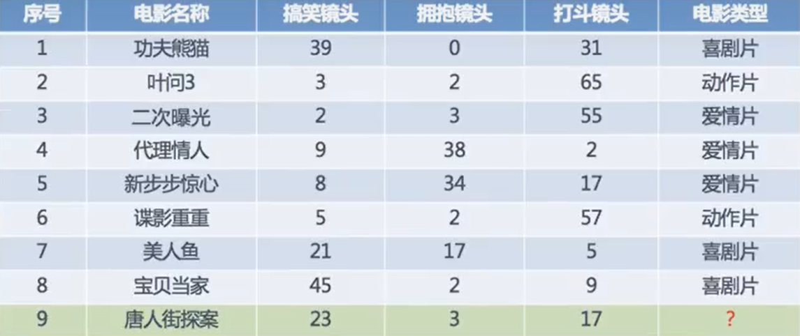
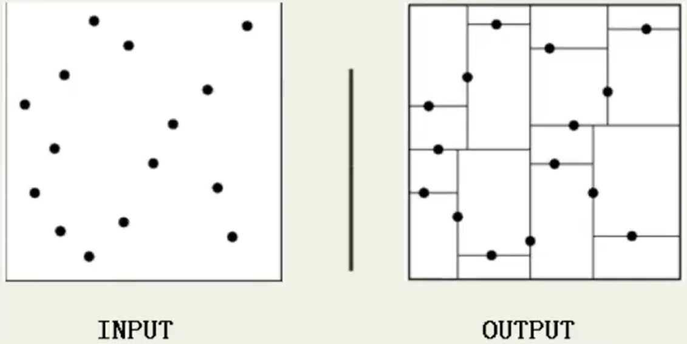
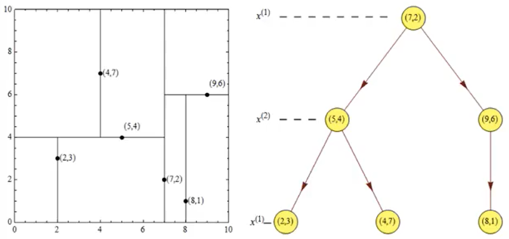
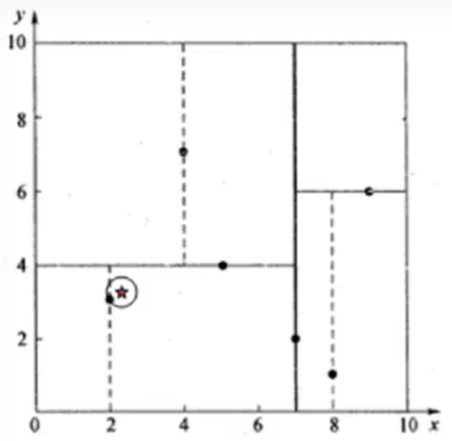
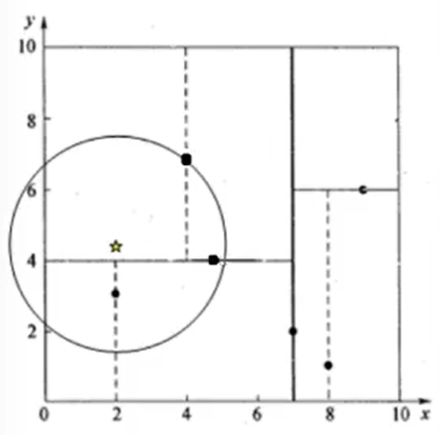

一、数据简介
在数据集中：
一行数据称为一个样本
一列数据称为一个特征
有些数据有目标值（标签值）
数据类型构成：
数据类型一：特征值+目标值（目标值是连续或离散的）
数据类型二：只有特征值，没有目标值
数据分割：
- 一般将数据集划分为两类：
- 训练数据：用于训练，构建模型
- 测试数据：在检验模型时使用，用于评估模型是否有效
- 划分比例
- 训练集：70% 80% 75%
- 测试集：30% 20% 25%
- 一般将数据集划分为两类：
二、数据基本处理：
- 对缺失值、去除异常值等处理
三、特征工程
3.1 什么是特征工程？
使用专业背景知识和技巧处理数据，使得特征能在机器学习算法上发挥更好作用的过程
- 意义：会直接影响机器学习的效果
3.2 为什么需要特征工程？
数据和特征决定了机器学习的上限，而模型和算法只是逼近这个上限
3.3 特征工程包含内容
- 特征提取
- 特征预处理
- 特征降维
3.3.1 特征提取
将任意数据（如文本图像）转换为可用于机器学习的数字特征
3.3. 2 特征预处理
通过一些转换函数将特征数据转换成更加符合算法模型的特征数据过程
3.3.3 特征降维
在某些限定条件下，降低随机变量（特征）个数，得到一组“不相关”主变量的过程
四、机器学习
4.1 监督学习
- 定义：
- 输入数据是由特征值和目标值组成的
- 输出是一个连续的值（回归）
- 输出是有限个离散值（分类）
- 分类：k-近邻算法、贝叶斯分类、决策树与随机森林、逻辑回归、神经网络
- 回归：线性回归、岭回归
- 输入数据是由特征值和目标值组成的
4.2 无监督学习
- 定义：
输入数据是由特征值组成
输入数据没有被标记，也没有确定结果。样本数据类别未知，需要根据样本间的相似性对样本集进行分类（聚类，clustering），试图使类内间距最小化，类间差距最大化。
聚类：k-means、降维
4.3 半监督学习
- 定义：
- 输入数据有特征值，一部分有目标值，一部分没有目标值
4.4 强化学习
- 定义：
自动进行决策，并可以做连续决策
动态过程，上一步数据的输出是下一步数据的输入
四要素：agent、环境状态、行动、奖励
算法：马尔科夫决策、动态规划
五、模型评估
模型评估有助于表达数据的最佳模型和所选模型将来工作的性能如何，按照数据集的目标值不同，可以把模型评估分为分类模型评估和回归模型评估
5.1分类模型评估
- 准确率
- 预测正确的数占样本总数的比例
- 精确率
- 正确预测为正占全部预测为正的比例
- 召回率
- 正确预测为正占全部正样本的比例
- F1-score
- 主要用于评估模型的稳健性
- AUC指标
- 主要用于评估样本不均衡的情况
5.2 回归模型评估
均方根误差（Root Mean Squared Error, RMSE）
- 衡量回归模型误差率的常用公式，但它仅能比较误差是相同单位的模型
- $$RMSE=\sqrt{\frac{\sum\limits_{i=0}^n(p_i-a_i)^2}{n}}$$, $a_i$为实际值，$p_i$为预测值
相对平方误差（Relative Squared Error，RSE）
- 与RMSE不同，RSE可以比较误差是不同单位的模型
- $$RSE=\frac{\sum\limits_{i=1}^{n}(p_i-a_i)^2}{\sum\limits_{i=1}^{n}(\bar{a}-a_i)^2}$$
平均绝对误差（Mean Absolute Error，MAE）
与RMSE类似，仅能比较误差是相同单位的模型，但是误差值相对小一点
$$MAE=\frac{\sum\limits_{i=1}^{n}\lvert p_i-a_i \rvert}{n}$$
相对绝对误差（Relative Absolute Error，RAE）
- 可比较误差是不同单位的模型
- $$MAE=\frac{\sum\limits_{i=1}^{n}\lvert p_i-a_i \rvert}{\sum\limits_{i=1}^{n}\lvert \bar{a}-a_i \rvert}$$
决定系数（Coefficient of Determination）
- $R^2$汇总了回归模型的解释度，由平方和计算而得，描述回归模型所解释的因变量方差在总方差中的比例。$R^2$越大，自变量与因变量之间存在线性关系
- $R^2=1-\frac{\sum\limits_{i=1}^{n}(p_i-a_i)^2}{\sum\limits_{i=1}^{n}(\bar{a}-a_i)^2}$
5.3 拟合
用于评价训练好的模型的表现效果
5.3.1 欠拟合
学到的特征太少了，导致区分标准太粗糙，不能进行较为准确的识别
5.3.2 过拟合
模型在训练集表现优越，而在验证集和测试集表现不佳。学的特征太多了
六、分类算法
6.1 k近邻（KNN）算法
通过你的“邻居”，来判断你的类别
6.1.1 k-近邻算法概念
K Nearest Neighbor算法又称KNN算法
定义
- 如果一个样本在特征空间中的k个最相似（特征空间中的最近邻）的样本中的大多数属于一个类别，则该样本也属于这个类别
应用场景
- 字符识别
- 文本分类
- 图像识别
距离公式
- 一般使用欧氏距离
- n维空间点$a(x_{11},x_{12},\dots,x_{1n})$到$b(x_{21},x_{21},\dots,x_{2n})$的欧式距离为$$d_{12}=\sqrt{\sum\limits_{k=1}^{n}(x_{1k}-x_{2k})^2}$$
- 一般使用欧氏距离
6.1.2 k-近邻算法流程
假设有几部电影数据，要推测《唐人街探案》的电影类型
- 首先计算《唐人街探案》与每部电影的距离
- 如《唐人街探案》与《二次曝光》，$d=\sqrt{(23-2)^2+(3-3)^2+(17-55)^2}=43.42$
- 指定k的取值，此处取k=5。对计算结果进行排序，取出找出距离最近的5部电影
- 根据k近邻，统计各类别出现频率，取频率最高的类别作为《唐人街探案》电影类型
- 当k=5时，《唐人街探案》的近邻分别为《功夫熊猫》、《代理情人》、《新步步惊心》、《美人鱼》、《宝贝当家》。其中喜剧片有3部，爱情片2部
- 所以，推测《唐人街探案》为喜剧片
6.1.3 k-近邻API
- sklearn.neighbors.KNeighborsClassifier(n_neighbors=5)
- n_neighbors：int，可选（默认5），k_neighbors查询默认使用的邻居数
6.1.4 代码过程
以前文电影类型预测为例
- 导入模块
from sklearn.neighbors import KNeighborsClassifier- 构造数据集
x=[[39,0,31],[3,2,65],[2,3,55],[9,38,2],[8,34,17],[5,2,57],[21,17,5],[45,2,9]]
y=['喜剧片','动作片','爱情片','爱情片','爱情片','动作片','喜剧片','喜剧片']- 模型训练
# 实例化API
estimator=KNeighborsClassifier(n_neighbors=5)
# 使用fit方法进行训练
estimator.fit(x,y)
# 进行预测
estimator.predict([[23,3,17]])6.1.5 完整代码
from sklearn.neighbors import KNeighborsClassifier
from sklearn.preprocessing import StandardScaler
# 导入数据集
x = [[39,0,31],[3,2,65],[2,3,55],[9,38,2],[8,34,17],[5,2,57],[21,17,5],[45,2,9]]
y = ['喜剧片','动作片','爱情片','爱情片','爱情片','动作片','喜剧片','喜剧片']
# 标准化数据
# 若量纲不一致，计算距离时，会被量纲较大的特征主导，可能导致计算过程不准确
scaler = StandardScaler()
x_standardized = scaler.fit_transform(x)
# 模型训练
# 设定KNN分类器超参数K，并实例化该分类器
# 当类别最高票数有多个时，sklearn会默认按字典序确定分类结果
estimator = KNeighborsClassifier(n_neighbors=5)
# 将特征矩阵x和目标矩阵y绑定到estimator分类器实例上
estimator.fit(x_standardized,y)
# 预测样本
x_new = [[23,3,17]]
x_new_standardized = scaler.fit_transform(x_new)
# 获取与预测样本距离最近的指定个数的训练样本距离及索引
# 此处的 n_neighbors 指定返回最近邻样本个数
distances, indices = estimator.kneighbors(x_new_standardized, n_neighbors=5)
# 输出距离和对应的目标值
print("最近k个邻居信息:")
for i in range(len(distances[0])):
print(f"Distance: {distances[0][i]}, Index: {indices[0][i]}, Target: {y[indices[0][i]]}")
# 基于绑定的数据计算距离，预测新样本类别
print(f'预测类别: {estimator.predict(x_new_standardized)[0]}')6.1.6 解决量纲不一致
6.1.6.1 标准化
标准化将每个特征调整为均值为0，标准差为1的分布。常用的标准化方法是Z-score标准化：$x’=\frac{x-mean(x)}{std(x)}$
- 在具有一定数据量的情况下，少量异常点对于平均值的影响不大，从而方差改变较小，适合现代嘈杂大数据场景
from sklearn.preprocessing import StandardScaler
scaler = StandardScaler()
x_standardized = scaler.fit_transform(x)6.1.6.2 Min-Max 归一化
Min-Max归一化将特征调整到一个统一的范围，0到1：$x’=\frac{x-min(x)}{max(x)-min(x)}$
- 受最大最小异常值影响大，所以该方法鲁棒性较差，只适合传统精确小数据场景
from sklearn.preprocessing import MinMaxScaler
scaler = MinMaxScaler()
x_normalized = scaler.fit_transform(x)6.1.6.3 最大绝对值归一化
最大绝对值归一化通过将每个特征除以它的最大绝对值，将特征映射到-1到1。它不会移动和中心化数据，因此不会破坏任何的稀疏性：$x’=\frac{x}{max|X|}$
- 缺点同 Min-Max 归一化
from sklearn.preprocessing import MaxAbsScaler
scaler = MaxAbsScaler()
x_maxabs_scaled = scaler.fit_transform(x)6.1.6.4 单位向量归一化
将特征转换为单位向量，常用于文本分类等
from sklearn.preprocessing import Normalizer
scaler = Normalizer()
x_normalized = scaler.fit_transform(x)6.1.7 距离度量
欧式距离
- 直线距离
- n维空间点$a(x_{11},x_{12},\dots,x_{1n})$到$b(x_{21},x_{21},\dots,x_{2n})$的欧式距离为$$d_{12}=\sqrt{\sum\limits_{k=1}^{n}(x_{1k}-x_{2k})^2}$$
曼哈顿距离
- 也称 城市街区距离（City Block Distance）
- 是从一个地点驾车到另一个地点所行驶过的距离
- 水平+竖直距离
- n维空间点$a(x_{11},x_{12},\dots,x_{1n})$到$b(x_{21},x_{21},\dots,x_{2n})$的曼哈顿距离为$d_{12}=\sum\limits_{k=1}^{n}\lvert x_{1k}-x_{2k} \rvert$
切比雪夫距离（Chebyshev Distance）
- 八邻域方向，行走到目标点的最短距离
- n维空间点$a(x_{11},x_{12},\dots,x_{1n})$到$b(x_{21},x_{21},\dots,x_{2n})$的切比雪夫距离为$d_{12}=max(\lvert x_{1k}-x_{2k} \rvert)$
闵可夫斯基距离（Minkowski Distance）
- 闵氏距离不是一种距离，而是一组距离的定义，是对多个距离度量公式的概括性的表述
- n维空间点$a(x_{11},x_{12},\dots,x_{1n})$到$b(x_{21},x_{21},\dots,x_{2n})$的闵可夫斯基距离为$$d_{12}=\sqrt[p]{\sum\limits_{k=1}^{n}\lvert x_{1k}-x_{2k} \rvert^p}$$
- 公式中，p是一个参数
- 当p=1时，就是曼哈顿距离
- 当p=2时，就是欧式距离
- 当$p\rightarrow\infty$时，就是切比雪夫距离
闵氏距离，包括欧氏距离、曼哈顿距离、切比雪夫距离都有着共同的缺点：
- 将各个分量的量纲，即单位都相同看待了
- 未考虑各个分量的分布（期望、方差等）可能是不同的
标准化欧氏距离（Standardized Euclidean Distance）
- 针对欧式距离的缺点进行的一种改进
- 思路：既然各个分量的分布单位不一样，那先将各个分量都标准化到均值、方差相等。
- 假设样本集X的均值为m，标准差为s，那么X的标准化变量变量可表示为：$X^*=\frac{X-m}{s}$
- 那么标准化欧氏距离：$d_{12}=\sqrt{\sum\limits_{k=1}^{n}(\frac{x_{1k}-x_{2k}}{s_k})^2}$
- 若将方差的倒数看成一个权重，也称之为加权欧氏距离
余弦距离（Cosine Distance）
几何中，夹角余弦可用来衡量两个向量方向的差异
机器学习中，用来衡量样本向量间的差异
二维空间中向量$A(x_1,y_1)$和$B(x_2,y_2)$的夹角余弦公式：$cos\theta=\frac{x_1x_2+y_1y_2}{\sqrt{x_1^2+y_1^2} \sqrt{x_2^2+y_2^2}}$
两个n维样本点$a(x_{11},x_{12},\dots,x_{1n})$到$b(x_{21},x_{21},\dots,x_{2n})$的夹角余弦为：$cos\theta=\frac{a \cdot b}{\lvert a \rvert \vert b \rvert}$，即$cos\theta=\frac{\sum\limits_{k=1}^{n}x_{1k}x_{2k}}{\sqrt{\sum\limits_{k=1}^{n}x_{1k}^2}\sqrt{\sum\limits_{k=1}^{n}x_{2k}^2}}$
夹角余弦的取值范围为$[-1,1]$。余弦越大两个向量夹角越小，反之亦然。当两个向量的方向重合时，余弦取最大值1，完全相反时取最小值-1
汉明距离
- 一个字符串，变到另一个字符串，需要做的最小替换次数
- 编码解码可能会用到
杰卡德距离
- 通过交并集进行计算
马氏距离
- 通过样本分布进行计算
- 与量纲无关
- 计算建立在总体样本上
- 要求总体样本数大于样本的维数
6.1.8 k值的选取
- k太小，容易受到异常点的影响，易发生过拟合
- k太大，受样本均衡的影响，易发生欠拟合
近似误差：关注训练集，在训练集的训练误差，对未知测试样本会出现较大的偏差，类似于过拟合
估计误差：关注测试集，对测试集的测试误差，估计误差越小，对未知数据的预测能力越好
- 选择较小的k值，会让近似误差减小，估计误差会增大
- 选择较大的k值，会让近似误差增大，估计误差减小，k的增大意味着模型变得简单
6.2 kd树
实现k近邻算法时，需要考虑的问题是如何对训练数据进行快速k近邻搜索，这在特征空间的维数大及训练数据容量大时很有必要
k近邻最简单的实现是线性扫描（穷举搜索），即要计算输入实例与每一个训练实例的距离。计算并存储好以后，再查找k近邻。当训练集很大时，计算非常耗时
为提高knn的搜索效率，可以考虑使用特殊的结构存储训练数据，以减小计算距离的次数
6.2.1 kd树简介
由于k近邻算法每次预测一个点时，都会计算该点到训练集所有点的距离（穷举搜索），然后选出距离最近的k个点进行投票。当数据集很大时，假设有N个样本，D个特征，那么其算法复杂度为$O(DN^2)$。
为了避免每次预测都重新计算一次距离，kd树将距离信息保存在一棵树里，在计算之前查询距离信息，尽量避免重新计算。这样优化后的算法复杂度可降到$O(DN log(N))$。
如果A和B距离很远，B和C距离很近，那么A和C距离也很远。
另外还有一种称为 $Ball \ \ Tree$ 的算法，其在 $kd \ \ Tree$ 的基础上对性能进一步进行了优化
6.2.2 kd树原理
kd树（K-dimension tree）是一种对K维空间中的实例点进行存储以便对其进行快速检索的树形数据结构。kd树是一种二叉树，表示对K维空间的一个划分，构造kd树相当于不断地使用垂直于坐标轴的超平面将K维空间切分，构成一系列的K维超矩形区域。kd树的每个结点对应于一个k维超矩形区域。利用kd树可以省去对大部分数据点的搜索，从而减少搜索的计算量。
类比二分查找：给出一组数据 [9 1 4 7 2 5 0 3 8] ，要查找8。如果挨个查找（线性扫描），那么将会把数据集都遍历一遍。而使用二分法，对数组排序 [0 1 2 3 4 5 6 7 8 9] ，以5为分界，数据集就被划分为了 [0 1 2 3 4] 和 [6 7 8 9] 。此时经过对比，直接进入第二个簇进行查找，不需要再进入第一个簇内，提高了搜索效率。
把二分法中的数据换成k维数据点，对于数据集的划分就变成了用超平面对k维空间的划分。空间划分就是对数据点进行分类，”挨得近“的数据点就在一个空间里。
6.2.3 kd树构造流程
（1）构造根结点，使根结点对应于k维空间中包含所有实例点的超矩形区域；
（2）通过递归的方法，不断地对k维空间进行切分，生成子结点。在超矩形区域上选择一个超平面和超平面外的一个实例点，确定一个新的超平面，这个新的超平面通过选定的切分点并垂直于选定的超平面，将当前超矩形区域切分为左右两个子区域（子结点），这时剩余实例被分到两个新划分出的子区域内；
（3）重复过程（2），直到子区域内没有实例为止（终止时的结点为叶结点）。
kd树中每一个结点都是一个向量，和二叉树按照数的大小划分不同的是，kd树每层需要选定向量中的某一维，然后根据这一维度按左小右大的方式划分数据。构建kd树时，关键需要解决两个问题：
（a）选择向量的哪一维进行划分
（b）如何划分数据
问题（a）简单的解决方法可以是随机选择某一维或按顺序进行选择，但是更好的方法应该是在数据比较分散的那一维进行划分（分散的程度根据方差来衡量）。问题（b），好的划分方法可以使构建的树比较平衡，可以每次选择中位数来划分数据。
6.2.4 kd树构造案例
给定一个二维空间数据集：T = [(2, 3), (5, 4), (9, 6), (4, 7), (8, 1), (7, 2)]，构造一个平衡kd树
（1）计算 T 在xy两个维度下各自的方差，确定方差较大的维度为x轴
（2）以x维为基准进行排序 T’ = [(2, 3), (4, 7), (5, 4), (7, 2), (8, 1), (9, 6)]，选取中位数(7, 2)为根结点（也可以选(5， 4)为根结点）
（3）划分出左右两个子空间 a = [(2, 3), (4, 7), (5, 4)] 和 b = [(8, 1), (9, 6)]
（4）分别对ab两个子空间在xy两个维度上求取方差，确定基准维度，选取空间内中位数，再次划分子空间
（5）递归该过程，直至子空间内只包含一个点。
划分的结果如下：
6.2.5 最近邻域搜索
使用 $6.2.4$ 的样本集 $T$
查找点 $(2.1,3.1)$
在 $(7,2)$ 点测试到达 $(5,4)$ ，在 $(5,4)$ 测试到达 $(2,3)$ ，然后 $search_path$ 中的结点为 $<(7,2), (5,4), (2,3)>$ ，从 $search_path$ 中取出当前最佳结点 $nearest \ (2,3)$ ，计算 $(2.1,3.1)$ 与 $nearest$ 的欧氏距离 $dist$ 为 $0.141$ ；
然后回溯至 $(5,4)$ ，以 $(2.1,3.1)$ 为圆心，$dist = 0.141$ 为半径画圆，并不能与超平面 $y=4$ 相交，所以不必跳转到结点 $(5,4)$ 的右子空间去搜索，因为右子空间内不可能有更近样本点了；
于是，再回溯到 $(7,2)$ ，同样，以 $(2.1,3.1)$ 为圆心，$dist = 0.141$ 为半径画圆，并不能与超平面 $x=7$ 相交，所以不必跳转到结点 $(7,2)$ 的右子空间去搜索；
至此， $search_path$ 为空，结束整个搜索，返回 $nearest\ (2,3)$ 作为 $(2.1,3.1)$ 的最近邻点，最近距离 $dist$ 为0.141。
查到点 $(2,4.5)$
在 $(7,2)$ 点测试到达 $(5,4)$ ，在 $(5,4)$ 测试到达 $(4,7)$ ，然后 $search_path$ 中的结点为 $<(7,2), (5,4), (4,7)>$ ，从 $search_path$ 中取出当前最佳结点 $nearest \ (4,7)$ ，计算 $(2,4.5)$ 与 $nearest$ 的欧氏距离 $dist$ 为 $3.202$ ；
然后回溯至 $(5,4)$ ，以 $(2,4.5)$ 为圆心，$dist = 3.202$ 为半径画圆，与超平面 $y=4$ 相交，所以需要跳转到结点 $(5,4)$ 的左子空间去搜索，所以要将 $(2,3)$ 加入到 $search_path$ 中，现在 $search_path$ 中的结点为 $<(7,2), (2,3)>$ ，另外，$(5,4)$ 与 $(2,4.5)$ 的距离为 $3.04 < dist=3.202$ ，所以将 $(5,4)$ 赋给 $nearest$ ，并且 $dist = 3.04$；
回溯到 $(2,3)$ 叶子结点，直接判断 $(2,3)$ 是否离 $(2,4.5)$ 更近，计算得距离为 $1.5$ ，所以 $nearest$ 更新为 $(2,3)$ ，$dist$ 更新为 $1.5$ ；
回溯到 $(7,2)$ ，同样，以 $(2,4.5)$ 为圆心，$dist = 1.5$ 为半径画圆，并不能与超平面 $x=7$ 相交，所以不必跳转到结点 $(7,2)$ 的右子空间去搜索；
至此， $search_path$ 为空，结束整个搜索，返回 $nearest\ (2,3)$ 作为 $(2,4。5)$ 的最近邻点，最近距离 $dist$ 为 $1.5$。
